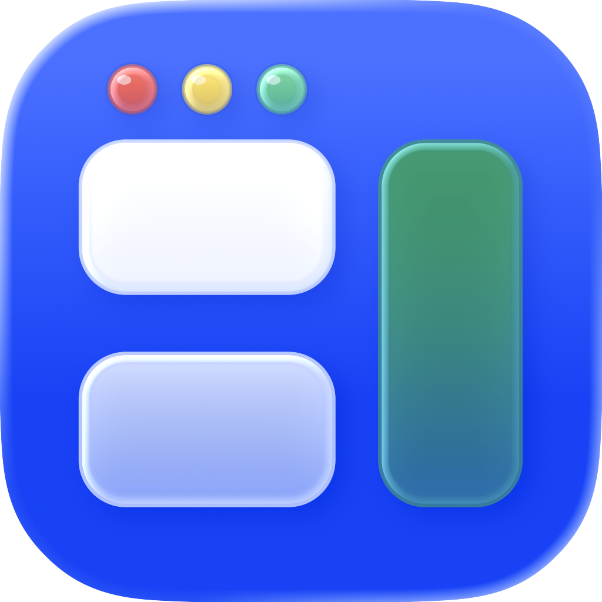

Your windows, working together
A place for
everything.
Your notes, your next project, your afternoon soundtrack. Give them all a little room.
Scroll to see how
BetterTileFree & open source. Made for macOS.
Snap into place. Resize together. Make room for what’s next.
BetterTile makes your windows work together.
Apple Silicon macOS 26+
Illustrative animation · Explore the Settings demo below
Your windows, working together
Your notes, your next project, your afternoon soundtrack. Give them all a little room.
Scroll to see how01 / Drag snapping
Drag a title bar toward an edge or corner. Preview the placement. Let go, and get back to it.
Preview first. Place with confidence.02 / Linked resizing
Need more space for an idea? Move the shared boundary. Neighboring windows resize together.
One movement. Both sides.03 / Adaptive Bento
Open something new. Bento adapts the layout to make space. Swap, lock, or float windows to make it yours.
A layout that changes with your work.04 / Layout Wheel
Hold Control + Option + Shift over a focused window. Move to a sector, then release to place it.
Interactive product demo
Explore BetterTile’s layout modes, menu actions, snap zones, and dividers. Everything here uses sample windows.
Try “resize”, “wheel”, or “rules”.
Choose how windows arrange and how shared boundaries respond.
New desktops start in Bento mode.
Applied each time a desktop is left with a single window. After that, it keeps the size you give it until another window opens or you repair the layout.
Saved for Native mode. Bento manages its own shared boundaries.
Choose what happens when a window reaches an edge or corner.
Choose the actions you reach for. Arrange them in the native app.
Put window actions around the pointer for quick access.
Choose which applications participate in BetterTile behavior.
Read-only example. These sample apps are not taken from your Mac.
In BetterTile, rules are remembered by app. Choosing Manage Normally removes an app from the list.
A few essentials. Everything else, just where you need it.
Less window work. More actual work.
From a quick snap to a full Bento layout, arrange your desktop around what you’re doing.
Drag a title bar toward an edge or corner. See the zone before you let go. Work inside a window without triggering a snap.
Drag the shared boundary between adjacent windows. Both sides resize together, with a ghost preview or live updates as you move.
Bento places new windows where they move and resize the least. Swap, lock, or float a window to make the layout your own.
Hold Control + Option + Shift over a focused window. Move to a sector, then release to place it. Customize each action in Settings.
Keyboard shortcuts with conflict detection Per-window undo
A small app. Clear principles.
Your window data stays on your Mac. No account, no behavioral tracking, and no paid tier.
Look inside on GitHubWindow management built around macOS.
Read it. Fork it. Help make it better.
To move and resize windows, explained before you grant access.
Before you start
An Apple Silicon Mac running macOS 26 or later. BetterTile needs Accessibility permission to move and resize windows from other apps.
Download the latest beta disk image from GitHub Releases, open it, and drag BetterTile into Applications.
The beta is self-signed and is not Apple-notarized. After attempting the first launch, open System Settings → Privacy & Security and choose Open Anyway. Only do this after confirming your download came from the official repository.
BetterTile does not send window data, configuration, analytics, telemetry, or crash reports. Settings stay in a local JSON file.
Update checks contact GitHub and can be turned off. GitHub receives ordinary connection metadata. Read the security and privacy policy for the full details.
Yes. BetterTile can work with windows arranged by macOS tiling. Bento can recognize the arrangement and continue resizing it with BetterTile’s dividers. For edge dragging, choose either BetterTile Drag Snapping or macOS edge tiling to avoid competing previews.
Yes. No trial, subscription, paid tier, or features held behind a purchase. BetterTile is free software under the GNU GPL v3 or later.
Meet your new window manager
Public beta Apple Silicon macOS 26+